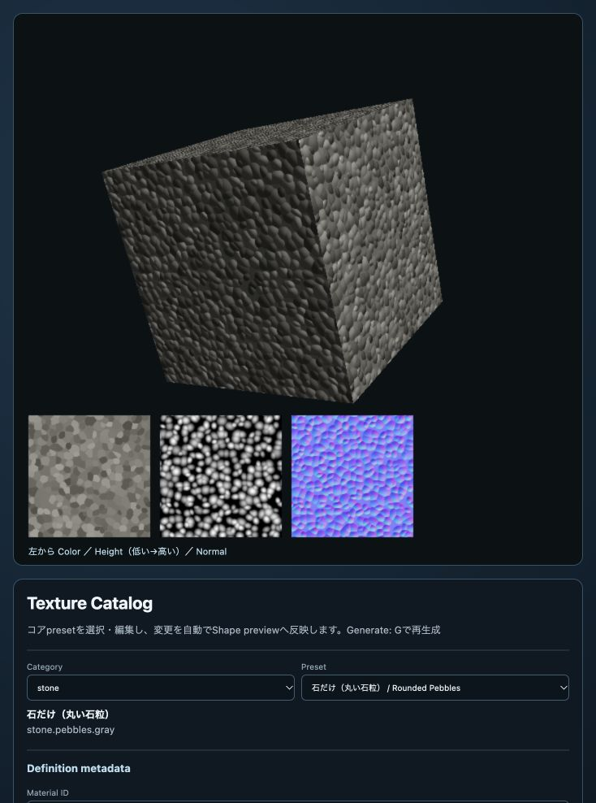

texture_catalog
English | 日本語
概要
texture_catalogは、webgコアのProcedural Texture presetを選択・編集し、立方体とColor／Height／Normal mapで確認するサンプルです。完成した設定はJavaScriptまたはJSON、生成したColor／Height／Normal mapはPNGまたはJPEGとして保存できます。
実行
リポジトリrootでHTTP serverを起動し、samples/texture_catalog/texture_catalog.htmlを開きます。
python3 -m http.server 8000
最小API
import ProceduralMaterials from "../../webg/ProceduralMaterials.js";
const materials = new ProceduralMaterials(gpu);
const oak = await materials.createPreset("wood.oak.plank");
oak.applyTo(shape);
Shapeは事前にUVを持つ必要があります。同じmaterial handleは複数Shapeへ登録できます。終了時はmaterials.destroy()で生成したGPU resourceを解放します。
初期preset
木材、コンクリート、窯業系セメント、レンガ、ビニール、セラミック、樹脂、石材の23 presetを収録しています。13 pattern（柾目、板目、柾目・板目mixを含む）を確認できます。Oak、Walnut、Cedarには板目とmixのpresetがあり、mixはvariation単位で柾目／板目を半数ずつ割り当てます。
丸い石粒と砂利
Categoryをstoneにすると、次の3種類を選べます。
| Preset ID | 内容 |
|---|---|
stone.pebbles.gray |
石だけ。丸い大粒、高さ上界40mm |
stone.pebbles-gravel.gray |
石と砂利。石の隙間に高さ6mmの小粒 |
stone.gravel.gray |
砂利だけ。小粒、高さ上界6mm |
いずれも新しいpebbles pattern、目地なし、2m四方の周期面です。
Pattern scale mは粒の配置尺度で、全粒の直径を同じ値にする指定ではありません。
大粒は0.12m、小粒は0.065mを基準に、半径・縦横比・向きをseedで変えます。
粒の色は暗色・中間色・明色を連続した濃淡から選びます。
Color amountは粒の色の濃淡、Pattern height mは粒の高さです。
色を薄くしてもHeight／Normalは変わらず、暗い粒も上向きに盛り上がります。
専用欄の「丸み」は0が平頂、1が丸い上面です。丸みを変えてもColor mapは変わりません。
「敷き詰め」は粒の大きさと中心位置のばらつきを調整し、隙間を狭めます。
「配置の乱雑さ」は0〜1で、位置のずれ、粒径、縦横比のばらつきを増やします。
「石だけ」は乱雑さ・粒の密度・敷き詰めを1にし、中央が高い丸い石を密に配置します。
「隙間の砂利の量」は0で大粒だけ、1で隙間へ小粒を合成します。
砂利の配置尺度・高さ・色の濃淡も独立して編集できます。
const stones = await materials.createPreset("stone.pebbles-gravel.gray", {
tile: {
pattern: {
colorAmount: 0.10,
heightMeters: 0.040,
pebbles: { roundness: 1, gravelAmount: 1, gravelHeightMeters: 0.006 }
}
}
});
stones.applyTo(shape);
左下にColor・Height・Normalを並べて表示します。Heightは低い面が暗く、高い面が明るい画像です。
グレースケールは各材質のheightRangeMetersに対する値で、物理高さそのものではありません。
Height rangeで復号に必要な範囲を確認でき、Download Heightで画像も保存できます。
Height／Normalを再利用する場合はPNGを選んでください。
立方体はNormalで起伏を照明へ反映するため、輪郭は変位しません。 実際の起伏へ光線を当てるアプリではHeightを復号し、高さ場の交差に使います。 設定と実装の詳細、 GPU検証も参照してください。

編集と出力
解像度、Base／Dirt／Joint色、タイル間の色変化、部材寸法、長軸、variation cell、目地、配置、pattern、surface detail、random seed、roughness、specular、metallic、Normal strengthを編集できます。Thickness mは部材寸法の参考値としてdefinitionへ保存されますが、手続きテクスチャ生成には使われません。変更は入力と同時にコード表示とGPU textureへ反映されます。GenerateまたはGキーは、同じdefinitionを手動で再生成する操作です。
Definition metadataでは、出力する部材のMaterial ID、Category、日英のLabel、Tile preset IDを編集できます。最初のCategoryは既存presetを絞り込む選択欄で、Definition metadata内のCategoryが出力definitionへ保存される分類です。既存presetを選択してからこれらの値を変更すると、同じtileとappearanceを元に別の部材definitionを作成できます。
コンクリートの砂による細かなざらつきを試す場合は、Patternのmottleを大きな色むらとして残し、Surface detail scale mを0.010〜0.0125、Surface noise height mを0.00020〜0.00030から調整します。色むらの粗さはPattern scale m、色の強さはColor amount、凹凸の強さはSurface noise height mで別々に変更できます。pixelsPerMeterは細部を記録する画素数を指定します。凹凸の高さはSurface noise height mで指定します。200 pixels/mで細部が潰れる場合だけ400 pixels/mを試します。
例えば、fiber cement siding用にmetadataを設定すると、JavaScript出力の先頭は次の形になります。tile内の他の設定も画面で編集した完成値が続きます。
export default {
"id": "fiber.cement.siding",
"schemaVersion": 1,
"category": "cement",
"label": {
"ja": "窯業系サイディング",
"en": "Fiber cement siding"
},
"tile": {
"presetId": "fiber.cement.siding",
// resolution、unit、layout、color、patternなどの完成値
}
};
このsampleはdefinitionファイルを出力します。コアpresetへの登録は別の操作として扱います。出力したdefinitionをコアpresetへ追加または既存presetと入れ替える場合は、内容を確認したうえでコア側へ個別に反映します。
LayoutのstackはRow offsetを0にします。running-bondへ変更した時にRow offsetが0なら、違いが見える標準値として1/2へ切り替えます。running-bondのoffsetを0、1/3、1/4へ変更すると、選択した値で再生成されます。
木材presetの初期配置は、Oakがrunning-bondの1/2、Walnutが1/3、Cedarが1/4です。Walnutは1/3の周期を閉じるため、variation cellを2列×6行で生成します。
寸法、配置、反射
| 項目 | 変更する内容 |
|---|---|
| Pixels per meter | 生成解像度。部材寸法、目地幅、edge roundはこの解像度で整数pixelに揃えられる |
| Long／Short size m | 一部材の長辺と短辺。textureの一周期と実寸Repeatに影響する |
| Thickness mode／Thickness m | 部材厚の参考値。指定してもColor／Height／Normal mapの生成結果は変わらない |
| Long axis | 長辺をtextureのuまたはvへ割り当てる方向 |
| Variation columns／rows | texture内で異なる部材variationを配置する数 |
| Joint edge round m | 目地から部材面へ戻る縁の丸み |
| Dirt color／Dirt amount | 部材表面へ加える汚れの色と量 |
| Metallic | PBRマテリアルの金属度 |
Patternとnoise
| 項目 | 変更する内容 |
|---|---|
| Tile color variation | タイルまたは部材ごとの明暗差。0で均一になり、大きいほどタイル間の色変化が強くなる。入力範囲は0～0.25 |
| Pattern scale m | 木理、石目、斑、粒など材質固有patternの基準寸法。小さいほど細かく、大きいほど粗くなる |
| Pattern color amount | patternによるColor mapの明暗振幅 |
| Pattern height m | patternをHeight／Normal mapへ反映する物理的な凹凸振幅 |
| Surface detail scale m | 材質patternとは独立した共通Perlin detailの基準寸法 |
| Surface noise height m | surface detailをHeight／Normal mapへ加える微細な凹凸振幅 |
| Random seed | 部材variation、Perlin noise、Voronoi点、Terrazzo chipなどの配置を変更する再現用整数 |
Patternとsurface detailは別の層です。例えば木理の間隔だけを変える場合はPattern scale m、木理を保ったまま表面の細かなざらつきを変える場合はSurface detail scale mとSurface noise height mを調整します。同じseedと同じ設定は同じtextureを再生成します。
数値の入力とshortcut
すべての数値欄は、右端のspin buttonだけでなく、欄を選択して数値を直接入力できます。数値欄へfocusがある間は↑／↓で次のstepずつ変更します。panel外では↑／↓はcamera操作です。
| 数値欄 | ↑／↓のstep |
|---|---|
| Pixels per meter | 1 |
| Long／Short size、Joint width | 0.005 m |
| Joint edge round | 0.0001 m |
| Joint depth | 0.0001 m |
| Pattern scale、Surface detail scale | 0.0025 m |
| Pattern color amount | 0.005 |
| Pattern height、Surface noise height | 0.00001 m |
| Random seed | 1 |
| Dirt amount | 0.005 |
| Metallic、Roughness、Specular | 0.01 |
| Normal strength | 0.05 |
GはGenerate buttonと同じ操作です。Canvas上でも数値欄へfocusがあるときでも使用できます。Ctrl+G、Command+G、Alt+Gはbrowser／OS側の操作を優先します。一回の長押しでGenerateを連続実行しません。
数値を直接入力している間はcode表示だけを更新し、入力完了時にGPU textureを生成します。↑／↓のspin buttonも値が確定した時点で生成します。これにより0.01のような小数を途中の0や0.で確定してしまいません。step、min、max、解像度の整数pixel条件から外れた値は、最も近い入力可能な値へ丸め、info欄に変更内容を表示します。
Gは文字列入力欄とtextareaでは入力文字として扱われ、それ以外のcontrolとCanvasではGenerate shortcutとして動作します。
Copy CodeとDownload JSは省略なしの完成definitionをES moduleとして出力します。Download JSONも同じdefinitionを保存し、Import JSONで再読込できます。数値がstep、min、max、解像度の整数pixel条件から外れる場合は、入力可能な近い値へ丸めてinfo欄へ表示します。
Texture imagesでPNGまたはJPEGを選び、Color・Height・Normal mapを生成元と同じpixel寸法で個別に保存できます。設定変更後に自動生成が完了してからダウンロードしてください。PNGは可逆です。Height／Normal mapを材質へ再利用する場合は、channel値が圧縮で変化しないPNGを使用してください。